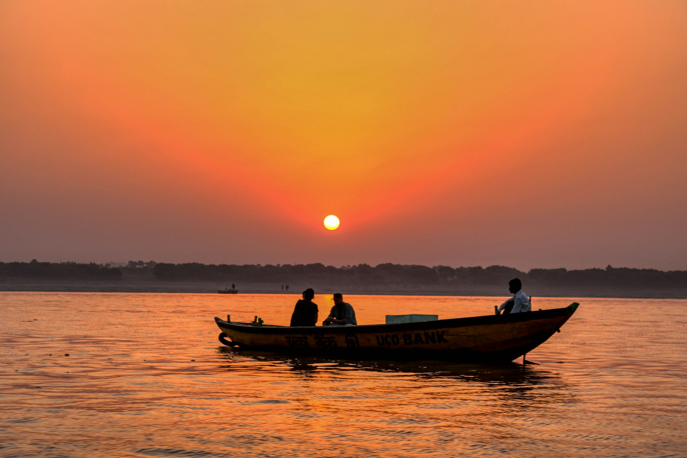
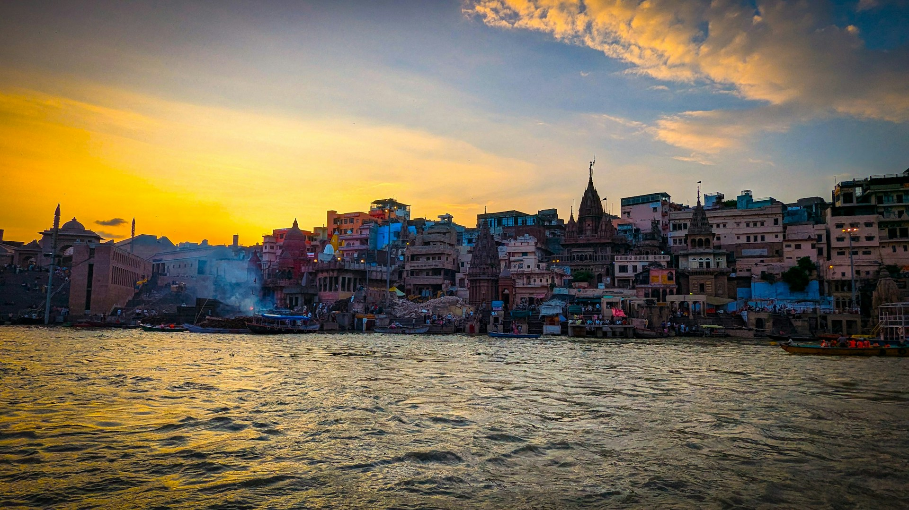
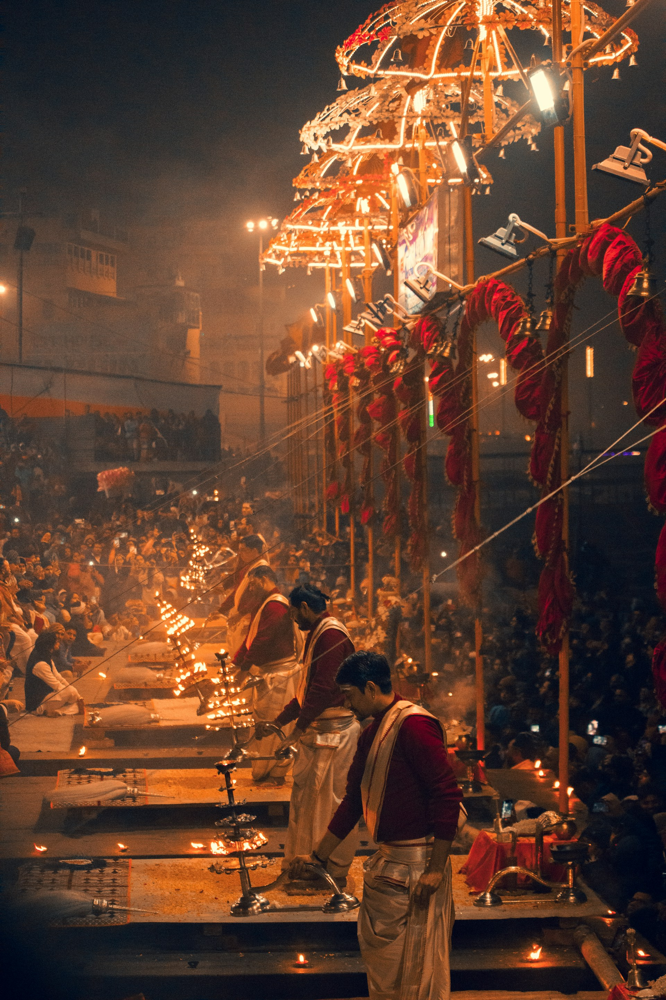

Varanasi, also known as Kashi or Benares, is one of the oldest living cities in the world.
Located on the banks of the holy river Ganga, it is considered the spiritual capital of India.
The city is famous for its ghats, where pilgrims take holy dips, perform rituals, and witness the mesmerizing Ganga Aarti in the evening. The narrow lanes, temples, and vibrant culture make Varanasi a truly unique experience.
Known as the city of Lord Shiva, Varanasi is also an important center for learning, music, and traditional art forms. Its timeless charm attracts millions of tourists and pilgrims every year.
The city is famous for its ghats, where pilgrims take holy dips, perform rituals, and witness the mesmerizing Ganga Aarti in the evening. The narrow lanes, temples, and vibrant culture make Varanasi a truly unique experience.
Known as the city of Lord Shiva, Varanasi is also an important center for learning, music, and traditional art forms. Its timeless charm attracts millions of tourists and pilgrims every year.





Tips for Visit
- Best season: October–March for pleasant weather.
- Don’t miss the evening Ganga Aarti at Dashashwamedh Ghat.
- Early morning boat ride on the Ganga is magical.
- Wear modest clothing as it is a holy city.
- Be cautious of narrow alleys and local touts.

Ramesh Kumar
15 yrs guiding in Agra
⭐⭐⭐⭐⭐
Farida Begum
Mughal history specialist
⭐⭐⭐⭐☆
Imran Ali
Speaks English, Hindi, French
⭐⭐⭐⭐⭐
Priya Sharma
Cultural & heritage tours
⭐⭐⭐⭐
Local Services
| NAME | CONTACT |
|---|---|
| Tourist Police | +91-542-2220135 |
| Boat Booking | +91-9123456789 |
| Hotel Helpdesk | +91-542-2254545 |
| Emergency | 100 / 108 |
Nearby Places
| NAME | Location | Highlights |
|---|---|---|
| Sarnath | 10 km | Buddhist site |
| Kashi Vishwanath Temple | City center | Jyotirlinga |
| Ramnagar Fort | 14 km | Museum & history |